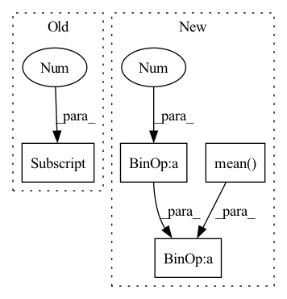

Pattern ID :380
Before Change
loss = 0.0
for z, c, l, b in zip(latents, codebooks, logits, codes):
z = z.detach().permute(0, 2, 3, 1)
k = l.shape[-1]
soft = l @ c
softQE = F.mse_loss(soft, z)
oneHot = F.one_hot(b, k).float()
hard = oneHot @ cAfter Change
qe = F.mse_loss(z.detach(), zq, reduction="none").mean(axis=(0, 2))
commit = F.mse_loss(z, zq.detach(), reduction="none").mean(axis=(0, 2))
softQE = F.mse_loss(z.detach(), soft, reduction="none").mean(axis=(0, 2))
softCommit = F.mse_loss(z, soft.detach(), reduction="none").mean(axis=(0, 2))
// joint = F.mse_loss(soft, zq, reduction="none").mean(axis=(0, 2))
loss += qe + 0.01 * commit + 0.1 * (softQE + 0.01 * softCommit)
return loss
class CompressionLoss(nn.Module):In pattern: SUPERPATTERN
Frequency: 3
Non-data size: 4
Instances Fragment ID: 1499446
Project Name: xiaosu-zhu/mcquic
Commit Name: 163d9bc5bb4d433d52358cf5c7abc5955136f574
Time: 2021-02-25
Author: xiaosu.zhu@outlook.com
File Name: src/mcqc/losses/structural.py
M Class Name: QError
N Class Name: QError
M Method Name: forward(4)
N Method Name: forward(5)
M Parent Class: nn.Module
N Parent Class: nn.Module
M File Name: src/mcqc/losses/structural.py
N File Name: src/mcqc/losses/structural.py
M Start Line: 11
M End Line: 21
N Start Line: 12
N End Line: 19
Before Change
// [k, k]
intra = codebook @ codebook.T
distance = 2 * ((inter[:, None] - 2 * intra + inter) / codebook.shape[-1] ).triu(1)
lower = F.relu(self._lower - distance) ** 2
After Change
// [k, k]
intra = (codebook @ codebook.T).triu(1)
loss = ((inter - 1.0 ) ** 2).mean() - intra.mean()
return loss
class L2Regularization(nn.Module): Fragment ID: 1499438
Project Name: xiaosu-zhu/mcquic
Commit Name: bb99df4591b6c532ba2285a5a670f5f070e4e624
Time: 2021-11-29
Author: xiaosu.zhu@outlook.com
File Name: src/mcqc/losses/quantization.py
M Class Name: CodebookSpreading
N Class Name: CodebookSpreading
M Method Name: forward(2)
N Method Name: forward(2)
M Parent Class: nn.Module
N Parent Class: nn.Module
M File Name: src/mcqc/losses/quantization.py
N File Name: src/mcqc/losses/quantization.py
M Start Line: 158
M End Line: 168
N Start Line: 153
N End Line: 159
Before Change
regs = list()
n, h, w, k = logits[0] .shape
// ths = torch.tensor(float(h * w) / k, device=device).clamp(1.0, h * w)
// codes: [m, n, h, w]; logits: m * list(n, h, w, k); codeFreqMap: m * list([n, h, w]), binCounts: m * list([n, k])After Change
// logit = logit.mean(dim=(1, 2))
posterior = Categorical(logits=logit)
prior = Categorical(logits=torch.zeros_like(logit))
reg = torch.distributions.kl_divergence(posterior, prior).mean()
// [n, h, w, k]
// weight = (-logit).detach().softmax(-1)
// oneHot = F.one_hot(code, num_classes=logit.shape[-1]).float()
// [n, h, w]
// targetWeight = (weight * oneHot).sum(-1)
code = torch.randint_like(code, logit.shape[-1])
logit = logit.permute(0, 3, 1, 2)
mle = F.cross_entropy(logit, code)
regs.append(reg + 0.01 * mle)
regs = sum(regs) / len(logits)
// regs = 0.0
return ssimLoss, l1Loss + l2Loss, regs Fragment ID: 1499437
Project Name: xiaosu-zhu/mcquic
Commit Name: 1d45f07abde25519c7c2b0dea317da9be2e41aae
Time: 2021-08-26
Author: xiaosu.zhu@outlook.com
File Name: src/mcqc/losses/quantization.py
M Class Name: CompressionLoss
N Class Name: CompressionLoss
M Method Name: forward(8)
N Method Name: forward(7)
M Parent Class: nn.Module
N Parent Class: nn.Module
M File Name: src/mcqc/losses/quantization.py
N File Name: src/mcqc/losses/quantization.py
M Start Line: 55
M End Line: 109
N Start Line: 45
N End Line: 125